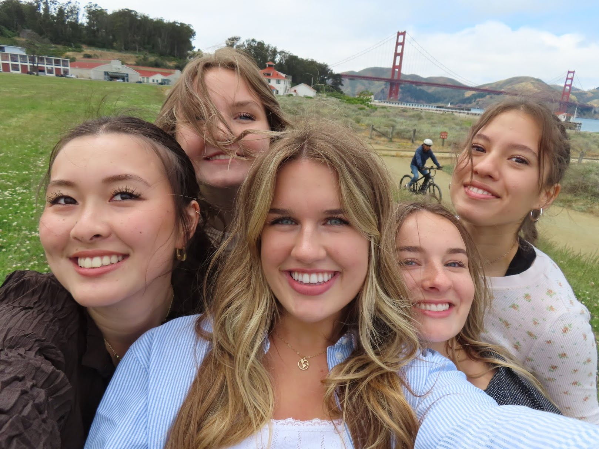
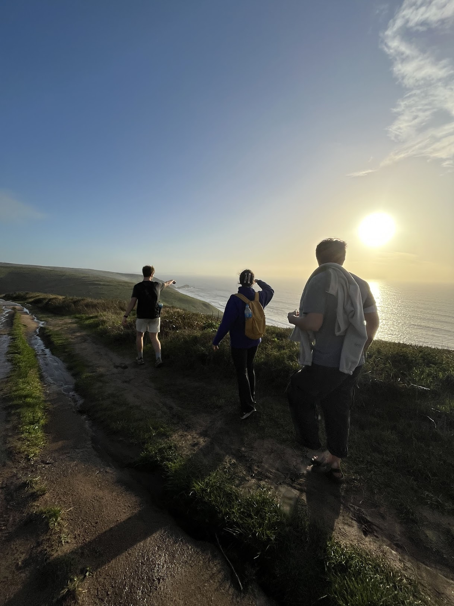

- Santa Cruz
- Marianne's Ice Cream
- Santa Cruz Beach Boardwalk
- Pleasure Point Pizza
- Gizdich Ranch
- Wilder Ranch
- Garden of Eden
- Panther Beach
- Taqueria Los Pericos
- San Francisco
- Chrissy Fields
- Twin Peaks
- Ferry Building
- Taqueria Cancun
- Marco Pollo Icecream
- Boudins
- North of San Francisco
- Point Reyes National Seashore Hike
- Santa Rosa Winery's
- Miur Woods
- Sausalito
- Santa Clara/San Jose
- Cupertino Main Street
- Westfield Valley Fair Mall/Santana Row
- Arestradero Preserve
- Alviso/Shoreline
- Villa Montalvo
- Sonora Taqueria

